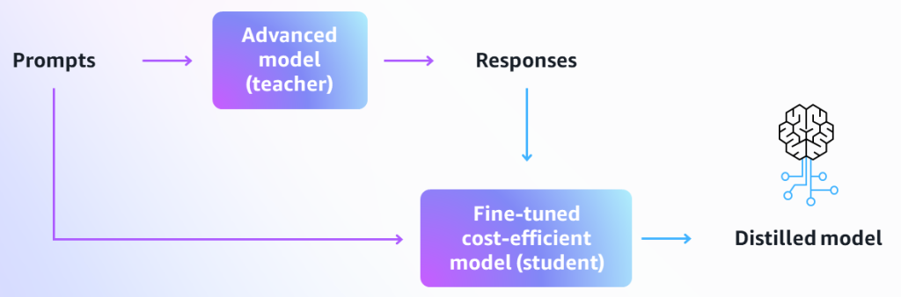

Blog 3
Optimizing cost for using foundational models with Amazon Bedrock
by Adam Richter and Bowen Wang | on 22 APR 2024 | in Amazon Bedrock, Generative AI, Best Practices | Permalink | Share
What is Amazon Bedrock?
Amazon Bedrock is a fully managed service that offers access to high-performing foundation models (FMs) from leading AI companies like Anthropic, Cohere, Meta, Mistral, Stabilityai, and Amazon through a single API. You can choose from a wide range of models to find the one that best fits your use case.
Inference as a building block
When you’re building generative AI applications, you need to find the right balance between model capability and cost. Amazon Bedrock provides multiple options that allow you to optimize for your specific use case:
- On-demand pricing: Pay for each token processed
- Provisioned throughput: Fixed hourly rate for predictable, high-volume workloads
- Batch processing: Lower-cost option for asynchronous jobs
Flexible pricing models
Amazon Bedrock offers flexible pricing options to match your workload patterns:
On-Demand Pricing
Perfect for variable workloads with unpredictable traffic patterns. You pay only for what you use, with no upfront commitments.
Provisioned Throughput
Ideal for consistent, high-volume inference workloads. By committing to a fixed amount of throughput, you receive significant discounts compared to on-demand pricing.
Batch API
Designed for non-time-sensitive workloads, the Batch API offers the lowest cost per token, making it perfect for bulk processing tasks.

Strategic model selection
Choosing the right foundation model is crucial for cost optimization. Consider:
- Model capability vs. cost trade-off: Larger models are more capable but more expensive
- Use case requirements: Some use cases may work well with smaller, more efficient models
- Token consumption: Shorter prompts and outputs reduce costs
Knowledge bases
Amazon Bedrock’s knowledge bases feature enables you to incorporate your own data into your generative AI applications without fine-tuning models. This approach is more cost-effective than traditional fine-tuning and provides better control over your data.

Customization
While foundation models are powerful out of the box, customization options include:
- Prompt engineering: Optimize your prompts to get better results with less computation
- Fine-tuning: For specialized use cases where you need domain-specific expertise
- Retrieval-augmented generation (RAG): Combine FMs with your proprietary data for contextually relevant responses
Distillation
Model distillation is a technique where knowledge from a large model is transferred to a smaller, more efficient model. This can significantly reduce inference costs while maintaining acceptable performance for your specific use case.

Prompt caching
Prompt caching is an advanced feature that caches frequently used prompts, reducing processing time and costs for applications that reuse similar context or system prompts across multiple requests.
Automated reasoning
Amazon Bedrock supports models optimized for complex reasoning tasks. These models can handle multi-step problem-solving more efficiently, reducing the number of API calls needed.
Conclusion
Optimizing costs for generative AI applications requires a thoughtful approach that balances model capability with your budget constraints. By leveraging Amazon Bedrock’s flexible pricing models, strategic model selection, and advanced features like knowledge bases and prompt caching, you can build cost-effective generative AI solutions that scale with your business needs.
|
|
Adam Richter is a Senior Optimization Solutions Architect at AWS, specializing in helping startups and enterprises optimize their costs for AI and machine learning workloads. With over a decade of experience in cloud architecture, Adam has worked with hundreds of organizations to implement cost-effective generative AI solutions. |

|
Bowen Wang is a Principal Product Marketing Manager at AWS, focused on helping customers understand and optimize their usage of Amazon Bedrock and other generative AI services. Bowen has extensive experience in billing and cost management, and is passionate about making AI accessible and affordable for all organizations. |